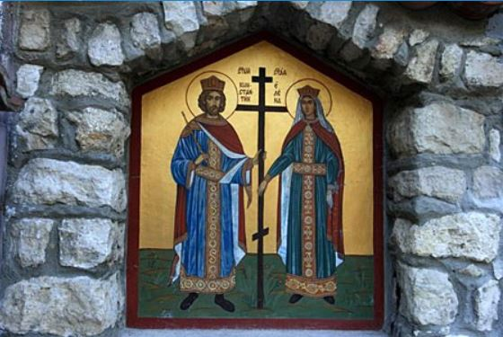

На 10 км североизточно от Варна се намира манастирът "Св. Св. Константин и Елена". Не е известно кога е основан, но предания разказват, че още през ХVІ век тук живяло монашеско братство и свързват възникването му с чудотворната икона на покровителите на християнството Св. Константин и Св. Елена и с лечебния извор (аязмо).
До средата на ХХ век в църквата е била пазена стара храмова икона с ликовете на двамата светци. В най-долната част, в основата на животворящия Господен кръст е имало силно повреден надпис на гръцки език, който гласял: "… поради силен страх на християните … в Цариград 1713 година …"
Най-ранните писмени сведения за историята на манастира са от ХVІІІ век и се съдържат в книгата "Писма от България" на известния руски пътешественик Виктор Тепляков, публикувана в Москва през 1832 г.
По време на руско-турската война 1828-1829 г. манастирът е бил разрушен. Няколко години след това благодарение на усилията на двама братя йеромонаси - Теодосий и Агапий Кантарджиеви от гр. Търново, започнало неговото възобновяване. Наоколо се простирала гъста и непроходима вековна гора. Монашеската обител била посещавана от твърде малко богомолци, които в пълно уединение извършвали християнските си обреди. След заселването на двамата братя йеромонаси, местното население, вярващо в чудотворната сила на иконата на Св.Св. Константин и Елена, със свой собствен труд и средства, с помощи и пожертвования успяло да преобрази околността в обработваема земя, която била дадена на манастира.
08:00 - 17:00ч., всеки ден
Епархийски манастир „Св. Св. Константин и Елена”
Курортен комплекс “Св. Св. Константин и Елена”
Тел.: +359 52 359 667; +359 52 362 076
www.mitropolia-varna.org